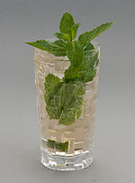
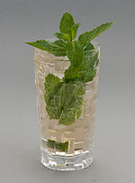
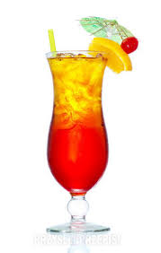

40 ml białego rumu20 ml syropu cukrowego lub cukier biały / brązowy cukier trzcinowy2 ćwiartki limonki6 liści mięty40 ml wody gazowanejkruszony lód
40 ml białego rumu20 ml syropu cukrowego lub cukier biały / brązowy cukier trzcinowy2 ćwiartki limonki6 liści mięty40 ml wody gazowanejkruszony lód
90 ml ginu30 ml wytrawnego wermutulód
kilka kostek lodu20 ml wódki20 ml likieru brzoskwiniowego100 ml soku żurawinowego100 ml soku pomarańczowego